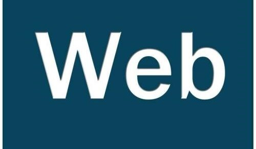

-
开始我的JQuery学习
 在学习了原生JS之后，我想我应该学习一下目前来说更加适合我的JQuery框架，因为JQuery的确能够省去很多码代码的繁杂时间
在学习了原生JS之后，我想我应该学习一下目前来说更加适合我的JQuery框架，因为JQuery的确能够省去很多码代码的繁杂时间 -
有关HTML与CSS的了解
 在进入前端的学习之后，我开始逐渐了解前端的知识，也了解到HTML/CSS是前端学习的基础知识，于是便开始了我的前端学习
在进入前端的学习之后，我开始逐渐了解前端的知识，也了解到HTML/CSS是前端学习的基础知识，于是便开始了我的前端学习 -
与前端的初次见面
emmmmm，第一次接触前端，是在学校的公共选修课上，第一次接触，便被吸引了，像是看到了编程语言的心没了，于是乎便一发不可收收拾